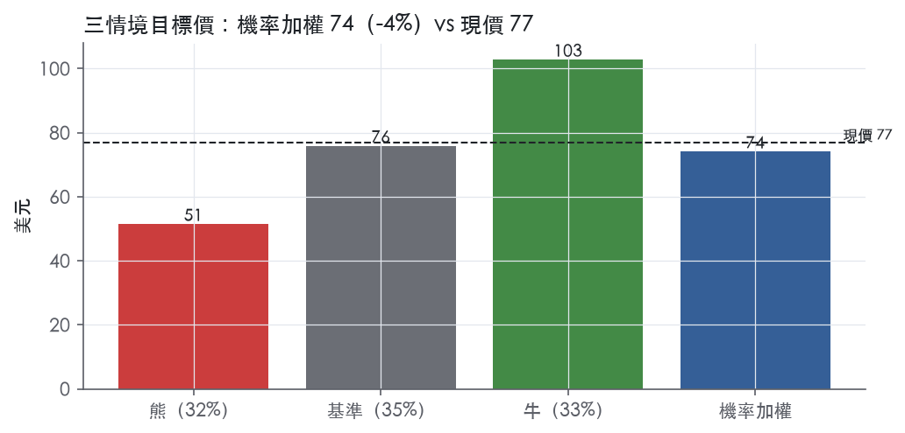
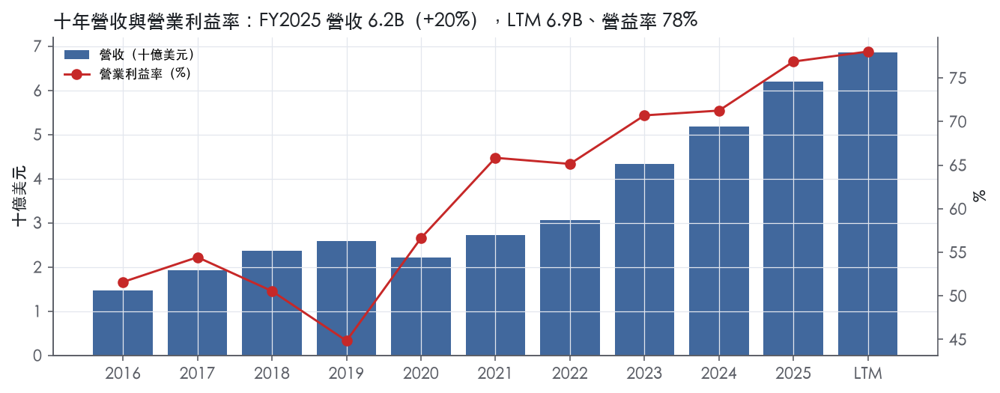
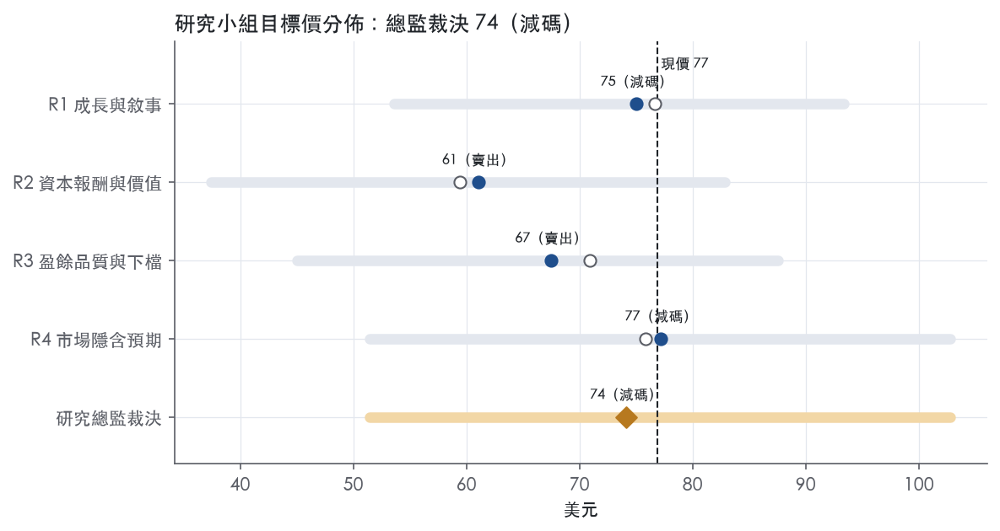
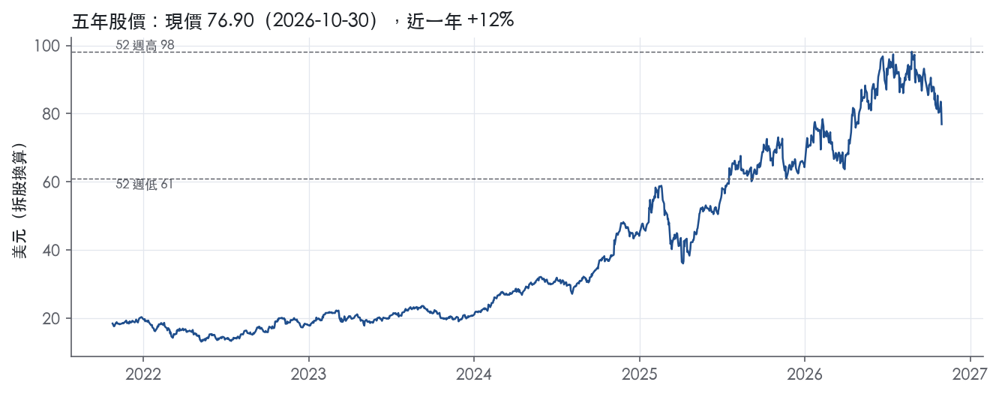

評等總表 › 金融 › IBKR
成長降檔已定價，輸同業籃，減碼｜評等 減碼｜目標價 74
| 報告日 | 評等 | 目標價 | 當時股價 | 超額報酬 |
|---|---|---|---|---|
| 2026-10-30 | 減碼 | 74.11 | 76.90 | -13.2% |
| 評等 | 減碼（邊界，鄰近賣出） |
| 12 個月目標價 | 74 美元 |
| 現價 | 76.90 美元（2026-10-30） |
| 預期報酬 | 股價 -3.6%＋股息 0.4%＝總報酬 -3.2%；同業籃門檻 10.0%，超額 -13.2% |
| 估值方法 | P/E 25.0x，套在第 5–8 季的EPS（也就是一年後的未來四季） |
| 三情境 | 熊 51／基準 76／牛 103 |
| 研究流程 | 四位研究員兩輪辯論＋研究總監裁決 |
| 資料來源 | SEC EDGAR XBRL、Tiingo、FRED（全免費） |
成長降檔已定價，輸同業籃，減碼（研究總監裁決，四位研究員兩輪辯論後）
評等 減碼（邊界，鄰近賣出）｜12 個月目標價 74 美元（總監三情境機率加權 77 與研究員中位數 71 各半）｜現價 76.90（2026-10-30）
預期報酬：股價 -3.6%＋股息 0.4%＝總報酬 -3.2%。同業籃門檻 10.0%，超額 -13.2%，離賣出的分界不到三個百分點，屬邊界評等（落在其他級距的機率約三成）。
估值方法：P/E 25.0x，套在第 5–8 季的EPS（也就是一年後的未來四季）。三情境：熊 51（32%）／基準 76（35%）／牛 103（33%）。
什麼會讓研究總監改變看法：FY2026Q4佣金年增重回20%以上且股票成交量轉正，我把倍數上調到持平的27.8x、轉中性；佣金連兩季年減且帳戶年增跌破25%，我把基準倍數降到22x、熊機率升至40%。
| 過去四季（實際，FY2026Q2） | 未來四季 | 第 5–8 季 | 第 9–12 季 | |
|---|---|---|---|---|
| 營收（B） | 6.9B | 7.9B | 8.8B | 9.5B |
| 營收成長 | 21.3% | 15.0% | 12.0% | 8.0% |
| 營業利益率 | 78.0% | 78.0% | 77.0% | 77.0% |
| EPS（美元） | 4.58 | 2.76 | 3.04 | 3.26 |
| EPS 成長 | 26.0% | -39.6% | 10.0% | 7.5% |
| 每股股息（美元） | — | 0.00 | 0.00 | 0.00 |
| P/E（現價） | 16.8x | 27.8x | 25.3x | 23.6x |
| 股息殖利率（現價） | 0.4% | — | — | — |
過去四季為申報數字；預測為研究總監的假設、程式計算。倍數與殖利率都用現價計算，用來看現價對應各期獲利的高低。
| 情境 | 機率（歷史） | 故事 | 未來四季營收成長 | 第 5–8 季營益率 | 倍數 | 目標價 | 股價漲跌 |
|---|---|---|---|---|---|---|---|
| 熊 | 32%（32%） | 對應風險表第4條（交易量轉弱）、第2條（監管費率）及保證金槓桿附註：本行下行路徑股市回檔、客戶去槓桿，佣金與保證金餘額同步下滑，NII壓力來自餘額非利率，薪酬黏性使營益率去槓桿至72% | 10.0% | 72.0% | 20.0x | 51 | -33.1% |
| 基準 | 35%（35%） | 帳戶複利撐住雙位數營收，佣金個位數成長，NII靠升息兩碼與餘額成長撐住，營益率守78%後緩降至77%，倍數隨成長降檔小幅收斂 | 15.0% | 77.0% | 25.0x | 76 | -1.3% |
| 牛 | 33%（33%） | 本行上行路徵軟著陸、風險偏好回升，DARTs年增重回25%以上、保證金貸款重回季增，市場以複利成長股定價回到今天乾淨trailing附近 | 20.0% | 79.0% | 30.0x | 103 | 33.7% |
目標價由程式依研究總監的驅動與倍數計算；機率由研究總監給定。括號內是歷史頻率：把這檔股票過去十年 12 個月報酬的波動形狀，置中在基準情境，結果落在各情境附近的比例。

四位研究員用不同方法各自估值，回應研究總監的質疑後交出第二輪，最後由總監逐點裁決。各研究員的主張見第七章，裁決理由見第八章，完整論證見《研究底稿》。
| 立場（一輪→二輪） | 加權目標價（一輪→二輪） | 評等（一輪→二輪） | 第二輪倍數 | 熊～牛目標價 | |
|---|---|---|---|---|---|
| R1 成長與敘事 | 中性→看空 | 77→75 | 減碼→減碼 | 28.0x | 54～93 |
| R2 資本報酬與價值 | 看空→看空 | 59→61 | 賣出→賣出 | 22.0x | 37～83 |
| R3 盈餘品質與下檔 | 看空→看空 | 71→67 | 賣出→賣出 | 25.0x | 45～88 |
| R4 市場隱含預期 | 看空→看空 | 76→77 | 減碼→減碼 | 25.0x | 51～103 |
| 研究總監裁決 | 看空 | 74 | 減碼 | 25.0x | 51～103 |
目標價由程式依各自的驅動與倍數計算；評等＝機率加權總報酬 − 同業籃門檻。
Interactive Brokers（IBKR）是一家自動化全球券商，核心業務是為機構與個人客戶執行、清算與結算全球股票、選擇權、期貨、外匯、債券、基金、ETF與貴金屬交易¹。公司成立於1977年，長期專注用自有軟體取代人工處理券商業務流程，目前整合超過170個電子交易所與市場中心，覆蓋40個國家、29種貨幣¹。客戶來自全球超過200個國家與地區，橫跨個人投資者、避險基金、共同基金、ETF發行商、註冊投資顧問、自營交易團體與介紹經紀商¹。公司也透過第三方加密貨幣服務商讓客戶交易比特幣、以太幣等加密資產，並經營自設的CFTC註冊交易所ForecastEx，提供事件型預測合約交易¹。本質上這是一家把交易執行與帳戶管理高度自動化、靠低成本結構與技術優勢取客的經紀商，收入來源是佣金、淨利息收入與其他手續費三條腿。
10-K並未把公司拆成傳統意義上的多個報告分部，而是用「電子經紀」單一業務模式運作，收入結構分為非利息收入（佣金、其他費用與服務、其他收入）與淨利息收入兩大塊【判，依10-K財報結構歸納】。FY2025總淨收入6,205M美元中，淨利息收入3,563M美元，年增13%，驅動因素是客戶保證金貸款與客戶信用餘額的平均規模成長，以及證券借貸業務轉強²；佣金收入2,149M美元，年增27%，受惠於股票、選擇權與期貨成交量上升²；其他費用與服務收入291M美元，年增4%，主要來自FDIC存款保險轉存計畫費用、市場數據費與交易所強制性訂單流付款的增加，部分被較低的風險暴露費抵銷²。以收入占比估算，淨利息收入約占總淨收入57%，佣金約占35%，其他費用服務僅占約5%（換算基礎對照資料包年度表）。產品線上公司特別點出針對機構客戶的差異化武器：對避險基金的主經紀商服務（含融資與證券借貸）、對財務顧問的模型投資組合技術與自動化份額配置再平衡工具、對介紹經紀商的全球接入平台與低價優勢²。自營市場做市業務仍存在但規模已不重要，且公司自己承認其表現會受市場結構變化、競爭者自動化程度與實際/隱含波動率關係影響²。
公司客戶群以地理與類型的分散度為特色，而非集中在單一市場或單一客群。FY2025總帳戶數達4.399M（is/bs對應年報數字，單位為千戶換算），較FY2024的3.337M成長32%²；客戶權益（customer equity）年底達779.9B美元，較去年568.2B美元成長37%²；客戶日均收益交易（Total Customer DARTs）達3.685M，年增40%²。從執行訂單量看，客戶訂單915,616千筆，年增38%，自營訂單121,972千筆，年增93%，顯示公司自身做市盤同步擴大但占比仍小²。合約與股數成交量方面，FY2025客戶選擇權合約1,623,384千口（+26%）、期貨合約240,120千口（+12%）、股票成交417,457,770千股（+38%）²。每張可收佣訂單的佣金從2024年2.86美元降至2025年2.68美元，降幅6%，顯示單位經濟持續被規模成長稀釋但客戶黏著度提升（清算客戶年化日均交易數從213降至203）²。公司在北美、歐洲與亞太均設有辦公室與資料中心，總部位於康乃狄克州格林威治，另於芝加哥、都柏林、香港、孟買等34個城市租用辦公與機房空間，反映其全球分散的客戶服務與清算網絡³。渠道上介紹經紀商、財務顧問與自營交易團體是機構端的關鍵通路，個人投資者則直接透過平台開戶交易。
最近四個季度營收與利潤率同步走高，反映交易量與客戶資產規模持續擴張。FY2025Q3（截至2025-09-30）營收0.60B美元，年增18.9%，營益率217.6%（dv.ebit_margin口徑）【判，依資料包】。FY2025Q4（截至2025-12-31，資料包推導）營收0.67B美元，年增19.5%，營益率194.9%，GAAP稀釋EPS 2.71（含年度特殊項目影響）【判，依資料包】。FY2026Q1（截至2026-03-31）營收0.70B美元，年增18.1%，EPS 0.59【判，依資料包】。FY2026Q2（2026-07-21發布，截至2026-06-30）GAAP與調整後稀釋EPS均為0.69美元，去年同期均為0.51美元⁴；GAAP淨營收1.90B美元、調整後1.88B美元，去年同期均為1.48B美元⁴；稅前利潤1.46B美元（調整後1.44B美元），去年同期1.10B美元⁴；佣金收入673M美元，年增30%，受選擇權、股票、期貨成交量分別增長17%、14%、2%驅動⁴；淨利息收入1.06B美元，年增23%⁴；稅前利潤率77%，去年同期75%⁴；客戶帳戶數年增34%至5.19M，客戶權益年增40%至930.3B美元，總DARTs年增36%至4.82M，客戶保證金貸款年增67%至108.5B美元⁴；董事會宣布季度股息0.0875美元⁴。
最新一季FY2026Q3（2026-10-15發布，截至2026-09-30）GAAP稀釋EPS 0.69美元、調整後0.67美元⁵；GAAP淨營收1.91B美元、調整後1.87B美元⁵；稅前利潤1.50B美元（調整後1.45B美元），去年同期1.31B美元（調整後1.27B美元）⁵；佣金收入602M美元，年增12%，主要受DARTs年增18%與轉嫁給客戶的監管費用上升驅動，期貨成交量增13%，但股票與選擇權成交量分別下降24%與1%⁵；淨利息收入1.15B美元，年增19%⁵；執行、清算與分銷費用大增46%至134M美元，主因SEC第31條交易費率上調帶來30M美元增幅⁵；稅前利潤率78%，與去年同期79%相近⁵；客戶帳戶數年增35%至5.58M，客戶權益年增27%至964.7B美元，總DARTs年增18%至4.27M，客戶信用餘額年增20%至186.2B美元，客戶保證金貸款年增36%至105.2B美元⁵；董事會將季度股息從0.0875美元提高至0.15美元，創近年單次最大增幅⁵。整體看，營收與帳戶規模連四季雙位數成長，但執行清算費用因監管費率調整而侵蝕部分利潤率，股票與選擇權客戶成交量在最新一季轉為下滑值得留意。
公司在10-K業務概覽中強調，其核心優勢來自近五十年持續開發的自有軟體，把券商功能自動化到「幾乎不需要人工介入」的單一平台，並持續把這套軟體與日益增加的交易場所、市場數據源、證券借貸平台與監管申報系統整合²。公司點名吸引機構客戶的三項專屬武器：主經紀商服務（對避險基金）、模型投資組合與自動化份額配置再平衡工具（對財務顧問）、全球接入與低定價（對介紹經紀商）²。在定價策略上，公司明確表示持續提供業界最低的保證金貸款利率，以及業界數一數二高的客戶現金存款利率，並認為這兩項是吸引並留住客戶的重要特徵²。公司也將貨幣多元化策略（以GLOBAL十種貨幣籃子管理約25%的非美元計價權益）視為管理外匯風險、穩定綜合損益的核心手段²。此外，公司持續擴張ForecastEx預測合約與加密貨幣交易入口，視為差異化產品線的延伸，同時坦承這兩塊業務面臨尚在演變中、不確定性高的法規環境¹。
公司把自身定位成受惠於全球交易量成長、市場波動率上升與退休金/散戶資產持續轉向自動化低成本平台的結構性受益者，而非單純看方向性行情。從最近四季數據看，帳戶數與客戶權益的複合成長明顯快於單季營收成長，顯示新客戶導入與既有客戶資產留存同時在發生，是比短期交易量波動更穩定的長期驅動力。但執行清算費用隨監管費率（如SEC第31條費率)調整而波動，加上最新一季股票與選擇權客戶成交量轉為年減，意味著佣金端的成長動能可能已從量能驅動轉向客戶規模驅動，這是後續追蹤的關鍵變數。

IBKR 有窄護城河，趨勢穩定。核心是自有技術帶來的成本優勢，加上多司法管轄區牌照與合規基礎設施形成的進入門檻，有把握撐過 5 年。不給寬評級有三個原因：公司在 10-K 裡自己承認技術領先未必守得住；獲利有相當部分來自利率環境；量化底稿的利潤率數字有口徑問題，無法驗證「長期穩定」。
成本優勢（主要來源）。這是最強、證據最直接的一類。公司自 1977 年成立以來專注開發自有軟體，把券商功能自動化²。整合後的平台「幾乎不需要人工介入」，並以低成本執行電子交易²。公司承認過去的成功主要歸功於多年開發的自有技術，而同等技術「並未被競爭者廣泛取得」⁶。
規模本身也在壓低單位成本：執行、清算與分銷費用下降 6% 至 420M 美元，原因之一是交易量提高後向交易所收取了更多流動性回饋²。這套成本結構讓公司能把優勢讓利給客戶。公司自稱保證金貸款利率屬業界最低之列，客戶現金利率屬業界最高之列，並把這兩點視為吸引客戶的重要特徵²。低成本換來低價，低價帶來規模，規模再壓低成本，這個循環是護城河的本體。
無形資產（監管牌照與合規基礎設施）。這是第二層防線。公司在美國、加拿大、英國、愛爾蘭、瑞士、印度、香港、日本、新加坡、澳洲等地受監管⁶。公司是 170 多個交易所、市場中心與自律組織的會員⁷。公司明言監管加嚴「也提高了進入門檻」，而其已建置的人力與自動化合規基礎設施「對潛在新進者可能構成優勢」⁷。
轉換成本（機構端，程度有限）。這一類只在機構客戶身上成立，證據偏弱。公司對避險基金提供含融資與券借的主經紀服務，對財務顧問提供模型投資組合與自動化配置再平衡工具，對介紹經紀商提供交易平台、全球接入與低價²。這些客戶一旦把作業流程嵌入平台，搬家的成本高於散戶。散戶端則幾乎沒有轉換成本，靠的是價格，所以這一類不能當主要論據。
網路效應與效率規模沒有證據，不列。
方向上看得到，但量化底稿只能部分佐證，利潤率穩定性無法驗證。
ROE 的方向支持護城河存在，絕對水準不宜直接使用。ROE 在有資料的 9 年中，9 年都高於資本成本代理值 10.0%。十年平均 81.2%，標準差 8.5%，最低 69.3%。從「持續高於資本成本、波動小」這兩點看，符合有護城河的型態。但 IBG, Inc. 只持有 IBG LLC 約 26.3%，Holdings 持有其餘 73.7%⁸。我判斷這種結構可能讓分子與分母的口徑不一致，把 ROE 水準墊高，因此 90.4% 的最新值不應拿去跟同業的絕對 ROE 比較。另外底稿用 ROE 代替 ROIC，對券商可以接受，但會放大槓桿的效果。
利潤率指標與原文衝突，不能用來證明穩定。量化底稿的稅前利益率最新 195.5%、標準差 59.8%。這與 10-K 揭露的稅前利潤率 77%（前一年 71%）明顯衝突²。原因應該是資料包的營收口徑：FY2025 營收 2.44B，而 10-K 揭露的淨收入是 6,205M 美元²。資料包的營收似乎沒有計入淨利息收入，FY2020 的 -50.1%也比較像口徑斷層，不像真實的營收衰退。因此 59.8% 的標準差是資料瑕疵，不是經營波動的證據。但這也代表我手上沒有可靠的十年利潤率序列來支持寬評級。
這是下修到「窄」的理由之一：寬評級需要數字證明 10 年以上的穩定，現有底稿做不到。
技術追趕與 AI。這是對成本優勢最直接的威脅。公司寫明，如果技術被競爭者廣泛取得，經營成果可能受損⁶。公司也寫明，AI 可能讓競爭者推出前所未見的產品，維持技術競爭力可能需要大幅增加投資⁶。
利率依賴。這一塊的超額報酬有一部分是週期性的，不是結構性的。淨利息收入 3,563M 美元，是最大的收入項²。淨利差從 2.35% 降到 2.08%，主因是利率下降²。
競爭與市場結構。公司自列的趨勢包括：券商之間的競爭可能持續加劇；交易場所整併可能降低 IB SmartRouting 軟體的價值²。
系統風險。公司沒有完全備援的系統，也沒有投保營業中斷險⁶。一次重大當機就可能直接損及品牌與客戶信任。
治理集中。Peterffy 及其關係人持有 Holdings 約 91.6% 的權益⁸。技術路線與定價策略高度取決於單一核心人物，接班是 5 至 10 年期間的不確定因素。
目標倍數相對同業應給予溢價，但溢價幅度應以窄護城河為上限，超額報酬期在模型中設定約 5 年後開始收斂，不應按 10 年以上的寬護城河處理。目前 P/E 16.8x 已高於自身 5 年中位數 11.8x，位於 5 年第 75.1 分位（資料包）；P/TBV 5.9x 也高於 5 年中位數 3.4x。進一步擴大溢價需要兩項證據支持：利率回落後利潤率仍能守住，以及取得口徑一致的 ROIC 序列。
| 指標 | 最新 | 十年平均 | 標準差 | 最低 | 最高 |
|---|---|---|---|---|---|
| 營業利益率 | 76.9% | 60.8% | 10.1% | 44.8% | 76.9% |
| ROE | 90.4% | 81.2% | 8.5% | 69.3% | 94.9% |
程式計算。資本成本代理值（10 年債＋5%）：10.0%；ROIC 平均減資本成本：—；ROIC 有資料的 0 年中，高於資本成本 0 年。
CFO 持續遠高於淨利，FY2025 CFO 15.81B 對淨利 4.36B，FY2024 CFO 8.72B 對淨利 3.41B，這是經紀商業務模型的特徵，客戶保證金與保證金貸款的現金流動放大了 CFO，不代表盈餘灌水。近八季 CFO 波動大，FY2026Q2 CFO 6.22B、FY2026Q1 僅 3.61B，這種季度間劇烈起伏主要來自客戶結算與保證金餘額的時點差異，不是盈餘品質問題。整體看，現金沒有落後盈餘，反而長期領先，這是「高品質」的核心支撐。
FY2025 調整項目包括：移除貨幣分散策略影響、投資的按市值計價損益、TRA 負債重新計量，公司將 Adjusted EPS 2.19 美元對比 GAAP 稀釋 EPS 2.22 美元²。FY2025 Adjusted net revenues 6,156M、Adjusted income before income taxes 4,722M，相對 GAAP 6,205M 與 4,771M²。3Q2026 新聞稿：GAAP 稀釋 EPS 0.69 美元，調整後 0.67 美元；GAAP 淨營收 1.91B，調整後 1.87B⁵。這些調整項（貨幣分散策略 FX 效果、投資按市值計價、TRA 重估）屬於非經營性、波動性的科目，我認為應該被剔除，GAAP 與 Non-GAAP 差距不大（EPS 僅差 0.02-0.03 美元），不是用來美化核心獲利的工具。FY2024 G&A 費用中有一次性項目：82M 法律和解金與 12M 歐洲子公司合併費用，FY2025 已不再發生，造成 G&A 年減 67M（21%）²，這是真實的一次性費用剔除，不影響對 FY2025 核心盈餘品質的判斷。
3Q2026 總權益 23.3B 美元⁵，公司第三季將季度股利從 0.0875 美元大幅上調至 0.15 美元⁵，顯示管理層對現金流的信心。SBC／營收 LTM 4.5%、近三年平均 5.6%，較十年平均 4.4% 略高且呈黃燈，MD&A 說明員工薪酬增加與「年度 Stock Incentive Plan 單位於較高股價下的歸屬」有關連動的社安稅增加²，這代表 SBC 隨股價上漲而膨脹，是真實稀釋成本，不是會計假象。稀釋股數年變動 LTM 僅 0.4%，遠低於近三年平均 3.1% 與十年平均 5.8%，顯示稀釋速度正在趨緩。（股利＋回購）／淨利比例偏低（LTM 3.0%），但這主要因為多數淨利歸屬於不可控的少數股東權益（IBG LLC 的 Holdings 持股約 73.7%）²，公司可分配給普通股股東的盈餘基礎本就較小，不是刻意壓低股東回饋。
SBC／營收黃燈：近三年平均 5.6% 高於十年均值，MD&A 明確解釋是員工薪酬歸屬時點與股價連動所致²，屬於可解釋的真實成本，非一次性，估值時不應加回。
稀釋股數年變動黃燈：LTM 僅 0.4%，已顯著低於三年與十年均值，紅旗意義不大，屬於改善中的趨勢，非真問題。
（股利＋回購）／淨利黃燈：比例偏低是公司結構（IBG LLC 多數股權歸屬 Holdings）造成的口徑問題，不是現金留存能力不足，可解釋為假警報。
淨利率 FY2019→FY2020 跳動 +49pp、FY2020→FY2021 +13pp、FY2021→FY2022 +18pp、FY2022→FY2023 +58pp：這四條程式紅旗都落在營益率／淨利率欄位同一現象——年度表顯示 FY2019 營益率 44.8%，FY2020 躍升至 97.6%，FY2021 114.0%，FY2022 132.7%，FY2023 197.1%（資料包年度表）。這段期間剛好對應 Fed 從零利率快速升息的週期，IBKR 的淨利息收入占總營收比重高（FY2023 淨利息收入占營收 64%）²，升息直接推升淨利息收益但非利息費用幾乎不變，造成利潤率機械性跳升，不是盈餘灌水或一次性項目，是利率週期的正常槓桿效果。這類「營益率」科目本身因為包含利息收入抵減利息支出後的淨額，和實體公司的毛利率結構不同，用一般製造業的紅旗邏輯去看會失真，屬於會計口徑造成的假警報。
估值應該用 GAAP 數字為主，因為 Non-GAAP 調整項（貨幣分散策略、TRA 重估、按市值計價）金額小且波動方向不一致，不存在系統性美化盈餘的證據。淨利率的歷史跳動完全可用利率週期解釋，不需要對歷史 EPS 額外打折，但估值時要留意目前 Fed Funds 已降至 3.75%【資料包總經】區間，淨利息收入成長動能可能隨降息周期放緩，FY2025 NIM 已從 2.35% 降至 2.08%²，這是對未來盈餘成長性的壓力而非對歷史盈餘品質的質疑。槓桿結構（多數權益歸屬 Holdings）不影響合理化估值倍數，但做 EPS 成長預測時務必區分 GAAP net income 與「歸屬普通股股東淨利」兩個口徑，避免高估每股盈餘的成長空間。
| 項目 | LTM | 近三年 | 十年 | 燈號 | 規則 |
|---|---|---|---|---|---|
| SBC／營收 | 1.8% | 2.1% | 2.6% | 綠 | ≤3.0% 綠、>8.0% 紅 |
| 稀釋股數年變動 | 0.4% | 3.1% | 5.8% | 黃 | ≤0.0% 綠、>3.0% 紅 |
| （股利＋回購）／淨利 | 3.0% | 2.4% | 2.7% | 黃 | ≥50.0% 綠、<0.0% 紅 |
程式計算；燈號以 LTM（無則近三年平均）判定。
| 風險 | 觸發指標（看什麼數字、在哪裡看） | 對 EPS 的影響方向與粗略幅度 | 未來 12 個月發生機率（高／中／低） | 出處 |
|---|---|---|---|---|
| 利率下行侵蝕淨利息收入 | fed_funds（FRED）、每季淨利息收入（8-K財報，目前1.15B美元/季） | 負向，大；淨利息收入占總淨收入約六成，FY2025淨利息收入3,563M美元年增13%，主要靠平均保證金貸款與利率水準撐出來² | 中 | ²+ |
| 監管費率／合規成本持續上調 | 執行清算分銷費用（8-K逐季揭露）、SEC第31條費率公告 | 負向，中；最新一季執行清算分銷費用年增46%至134M美元，其中30M美元來自SEC第31條費率上調⁵ | 高 | 8-K 財報新聞稿（2026-10-15） |
| 淨資本規則變動或單次大額資本沖銷 | 各子公司超額監管資本（10-K年度揭露，目前合計14.1B美元）、FINRA/SEC公告 | 負向，大（但屬尾端風險）；10-K明言淨資本規則變動或單次大額損失會限制公司擴張甚至觸發清算⁶ | 低 | 10-K 年報 FY2025 Item 1A（風險因素） |
| 客戶交易量（尤其股票/選擇權）成長動能轉弱 | 逐季DARTs、股票/選擇權成交量年增率（8-K財報） | 負向，中；最新一季客戶股票成交量年減24%、選擇權年減1%，佣金成長已轉由監管費轉嫁與期貨驅動⁵ | 中 | 8-K 財報新聞稿（2026-10-15） |
| 系統故障／網路安全事件 | 公司是否發布重大中斷公告、Item 1C資安章揭露的事件紀錄 | 負向，大（尾端風險）；10-K列為前瞻聲明風險因子之一，公司高度依賴自有技術自動化全流程¹ | 低 | 10-K 年報 FY2025 Item 1（業務） |
利率下行侵蝕淨利息收入是五條裡影響最大、且已有明確觸發機制的風險。IBKR 的淨利息收入規模取決於客戶保證金貸款與現金餘額乘以利差，FY2025淨利息收入3,563M美元，年增13%，驅動因素是客戶保證金貸款與信用餘額規模擴大，而非利率上升²。問題在於這個利差本身是順週期的——一旦聯準會開始降息，即使客戶資產規模持續成長，單位利差收窄也會直接壓縮這塊占總營收約六成的收入來源。目前fed_funds為3.75%（2026-09-01），仍處相對高位，若未來12個月進入連續降息，衝擊會先反映在淨利息收入年增率放緩，再傳導到EPS。監測方法：每季財報公布的「淨利息收入」年增率，以及FRED上fed_funds的變動路徑。
監管費率／合規成本持續上調是機率最高、已經在發生的風險。最新一季（FY2026Q3）執行、清算與分銷費用年增46%至134M美元，其中30M美元增幅直接來自SEC第31條交易費率上調⁵。這類費用雖多數可轉嫁給客戶（公司在佣金收入說明中也提到「higher regulatory fees, which are passed through to customers」⁵），但轉嫁存在時間差與不完全轉嫁的風險，短期會壓縮利潤率。監測方法：每季財報的「Execution, clearing and distribution fees」年增率，以及SEC是否公告新一輪費率調整。
淨資本規則變動或單次大額資本沖銷是機率最低但後果最嚴重的風險。10-K明確寫道，若淨資本規則改變或公司遭遇異常大額的資本沖銷，將限制需要密集資本的業務運作，嚴重時可能導致監管機構暫停或撤銷牌照，甚至走向清算⁶。截至2025年底，公司各受監管子公司合計超額監管資本14.1B美元，其中IB LLC本身超額8,824M美元¹，緩衝層看似充足，但這類風險的特徵是尾端事件，一旦發生衝擊是結構性的（牌照、業務連續性），不是單純EPS百分之幾的調整。監測方法：10-K年度揭露的各子公司超額監管資本變化、FINRA/SEC是否有新規則提案。
客戶交易量動能轉弱反映的是佣金收入結構已經出現裂縫。最新一季客戶股票交易量年減24%，選擇權交易量年減1%，只有期貨交易量維持兩位數成長（+13%）⁵。公司佣金收入年增12%主要是靠DARTs年增18%與監管費轉嫁撐出來，不是靠量能本身⁵。如果這個趨勢延續，佣金成長會進一步依賴帳戶數擴張而非既有客戶的交易活躍度，一旦新增帳戶成長也放緩（目前帳戶數年增35%屬於歷史高基期），佣金端的成長動能會明顯收斂。監測方法：每季財報揭露的股票/選擇權/期貨客戶成交量年增率、DARTs年增率。
系統故障／網路安全事件是公司前瞻聲明裡明確列出的因子，但屬於低機率、難以量化幅度的尾端風險。公司業務幾乎完全依賴自有技術自動化全流程（開戶、下單路由、清算、風控都是即時自動化系統）¹，一旦主要資料中心或核心清算系統發生重大故障，影響範圍會是全平台客戶而非單一產品線。監測方法：公司是否發布重大系統中斷的8-K公告、Item 1C資安揭露是否新增重大事件紀錄。
客戶保證金貸款集中度風險：FY2026Q3客戶保證金貸款年增36%至105.2B美元，增速遠高於客戶權益年增27%⁵，意味著客戶整體槓桿率在上升。10-K風險因子章節並未單獨揭露保證金貸款的槓桿集中度或逾期率數據，但這類快速擴張的保證金貸款在市場大幅下跌時，會放大客戶違約與公司壞帳風險，是監測EPS下行情境時應該額外加的變數。
業務組織結構的少數股權稀釋風險：IBG, Inc.僅持有IBG LLC約26.3%的權益，其餘73.7%由創辦人Peterffy及其關係人透過Holdings持有⁹。這代表歸屬於IBG, Inc.股東的淨利只是集團總利潤的一小部分，且未來Holdings持股的交換會持續稀釋或改變這個比例；10-K風險因子雖提到所有權與控股結構帶來的利益衝突，但沒有把這個比例變動對每股盈餘的長期機械性影響講清楚，值得在模型裡單獨追蹤這個比例的年度變化。
現價 76.90 對應 trailing（過去四季）P/E 16.8x、EV/EBITDA —、EV/EBITA —、EV/Sales —、FCF 殖利率 —。主要估值倍數 P/E 現在 16.8x，落在5 年區間第 75 百分位（P10／P50／P90 = 8.8x／11.8x／19.3x）。
把程式的機械基準預測放到現價下，市場付的前瞻倍數是：P/E（未來四季） 27.8x、P/E（第 5–8 季） 25.5x。
| 倍數 | 現在 | 5 年 P10 | 5 年 P50 | 5 年 P90 | 現在分位 | 全期 P50 |
|---|---|---|---|---|---|---|
| P/E | 16.8x | 8.8x | 11.8x | 19.3x | 75.1% | 11.6x |
| P/S | 5.0x | 2.3x | 2.9x | 5.7x | 80.5% | 2.5x |
trailing 倍數（股價 ÷ 過去四季）；分位以每個交易日計算。
同業籃：SCHW, HOOD, VIRT, RJF, LPLA（手動名單（playbooks/peers.yaml））。評等門檻 10.0%：同業「倍數不變下持有一年」的隱含報酬中位數（＝ FCF 殖利率 ×(1＋g)＋g，g 為 5 年營收年複合成長並夾在 −2%～8%），每家夾在 0～15%、P/E 低於 5 倍視為資料可疑而排除，中位數再限制在 10 年債到 10 年債＋5% 之間（同業原始中位數 14.7%）。
| 代號 | 市值 | 5 年營收 CAGR | 營益率 | ROIC | P/E | 5 年 P/E 中位數 | EV/EBITDA | P/FCF | 隱含報酬 |
|---|---|---|---|---|---|---|---|---|---|
| IBKR | 34.6B | 22.8% | 78.0% | — | 16.8x | 11.8x | — | — | 14.4% |
| SCHW | 153.1B | 15.4% | 50.2% | 31.5% | 15.9x | 23.9x | — | 14.2x | 14.8% |
| HOOD | 77.4B | 36.1% | 47.3% | — | 39.2x | — | 29.7x | — | 10.8% |
| VIRT | 4.7B | 2.3% | 31.3% | 39.0% | 8.8x | 9.4x | — | 9.0x | 14.0% |
| RJF | 30.2B | 14.3% | — | — | 13.7x | 14.8x | — | 20.9x | 15.9% |
| LPLA | 22.4B | 23.7% | 9.2% | 9.1% | 16.2x | 25.5x | 12.5x | 22.2x | 14.7% |
| 同業中位數 | 15.4% | 39.3% | 31.5% | 15.9x | 19.3x | 21.1x | 17.6x | 10.0% |
全部 trailing，程式以各公司 SEC XBRL 與 Tiingo 行情計算；第一列為本檔。
P/E 相對同業中位數：現在 5.5%，過去 1 年平均 -5.7%、3 年 -27.9%、5 年 -33.4%。
事後實現前瞻倍數帶（P/E，2018-08-17..2025-08-15）：P10／P50／P90 = 6.2x／8.4x／12.0x。它是每個交易日的股價除以之後四季實際實現的指標；一年後，今天的第 5–8 季正是那時的未來四季，所以這條帶是 12 個月目標價的同口徑倍數。因為用的是事後實際而非當時預期，過去成長超乎預期的公司這條帶會偏低。
程式的機械基準（成長率從過去四季年增率三年收斂到 6%、利潤率持平）用 事後實現前瞻 P/E P50 估值得到 25（-67.0%），市場現行前瞻倍數（現價 ÷ 基準 未來四季指標）一年後持平，套在基準 第 5–8 季指標得到 84。這兩個數字只是參考點，不是本報告的目標價；研究員對這個定價的回應在第七章。
下表是每位研究員第一輪（各自獨立）與第二輪（回應研究總監的質疑後）的結果。目標價全由程式依各自的假設計算。
| 立場（一輪→二輪） | 加權目標價（一輪→二輪） | 評等（一輪→二輪） | 第二輪倍數 | 熊～牛目標價 | |
|---|---|---|---|---|---|
| R1 成長與敘事 | 中性→看空 | 77→75 | 減碼→減碼 | 28.0x | 54～93 |
| R2 資本報酬與價值 | 看空→看空 | 59→61 | 賣出→賣出 | 22.0x | 37～83 |
| R3 盈餘品質與下檔 | 看空→看空 | 71→67 | 賣出→賣出 | 25.0x | 45～88 |
| R4 市場隱含預期 | 看空→看空 | 76→77 | 減碼→減碼 | 25.0x | 51～103 |
| 研究總監裁決 | 看空 | 74 | 減碼 | 25.0x | 51～103 |
目標價由程式依各自的驅動與倍數計算；評等＝機率加權總報酬 − 同業籃門檻。
分歧度：第一輪 加權目標價 59～77（區間＝現價的 22%）· 倍數 22～28x · 立場 中性×1、看空×3；第二輪 加權目標價 61～77（區間＝現價的 21%）· 倍數 22～28x · 立場 看空×4（方向一致）。

| 研究員 | 第二輪主張 | 堅持的理由 |
|---|---|---|
| R1 成長與敘事 | 看空，28倍前瞻P/E，以SCHW五年中位23.9倍加溢價。 | 帳戶複利不會兩年內歸零，第二年營收成長12%不改。 |
| R2 資本報酬與價值 | 偏空，22倍前瞻P/E，以SCHW現行15.9倍加成長與護城河溢價。 | 用乾淨EPS計算，現價倍數已高於公司十年高檔區22.7倍。 |
| R3 盈餘品質與下檔 | 溫和偏空，25倍前瞻P/E，從乾淨的過去四季P/E約29.4倍收縮。 | 盈餘是真的，但資料庫的第四季EPS有錯，歷史倍數不能當錨。 |
| R4 市場隱含預期 | 偏空，25倍P/E，從市場今天付的27.8倍向下壓一成。 | 市場外推了含高峰季的成長，低估了近端佣金減速。 |
每位研究員的逐條回應與完整論證見《研究底稿》（IBKR_研究底稿_2026-11-01.docx）。
| 分歧點 | R1 成長 | R2 價值 | R3 品質 | R4 預期 | 什麼資料會分出勝負 |
|---|---|---|---|---|---|
| 目標倍數與錨 | 28x ntm；SCHW 5 年中位 23.9x 加溢價 | 22x ntm；SCHW 現行 15.9x 加 6 倍 | 25x ntm；乾淨 trailing 約 29.4x 收縮 | 25x q5_q8；市場持平 27.8x 向下壓一成 | FY2026Q4 佣金年增率與股票成交量（2027-01）；修正推導季後重跑的前瞻帶 |
| y1 營收成長 | 13% | 15% | 13% | 15% | FY2026Q4 淨營收對 FY2025Q4 1.64B 的年增（2027-01） |
| y2／y3 成長軌跡 | 12%／9% | 12%／8% | 10%／6% | 12%／10% | 帳戶與客戶權益年增能否守 25%；FY2027Q2 對 1.90B 高基期的年增 |
| 營益率路徑 | 78／78／77 | 78／77／77 | 78／78／77 | 77.5／77／76.5 | 升息兩碼落地後 FY2027Q1–Q2 的稅前利潤率 |
| 股數變動 | 0.5% | 1% | 0.5% | 0.5%（基準 2%） | 10-K FY2026 揭露的 IBG Inc. 對 IBG LLC 持股比例變動 |
1. 目標倍數：選 R4（25x，eps@q5_q8）。 先處理錨。資料包的 trailing 帶（5y P50 11.8x、10y P90 22.7x）與事後實現前瞻帶（P50 8.4x）全建立在被推導季灌大的 EPS 上：FY2025Q4 EPS 2.71高於全年 2.22，FY2024Q4 2.22同樣高於 FY2024 全年 1.73，每一個 LTM 都含一個這樣的季，整條帶系統性偏低，不能當錨。R2 說「只有 1y 帶受污染、5y／10y 帶大致乾淨」不成立，他用「乾淨倍數高於自家 10y P90 22.7x」當偏空主軸，是拿乾淨分子對污染的帶，比較無效。可用的錨只剩兩個：三位研究員用 8-K 九個月稀釋 EPS 1.98 對 1.58 算出的乾淨 trailing 約 29.4x（R1／R2／R3 計算，請程式核對），以及基準模型的市場隱含前瞻倍數 pe_NTM 27.8x、pe_Q5–Q8 25.5x。劇本主尺是 eps@q5_q8，目標倍數要與「一年後市場對當時未來四季付的倍數」比，對照物就是今天的 27.8x（市場持平參考點，目標價 84）。R4 的 25x 低於持平倍數約一成，理由全是公司自己的：佣金年增從 +30% 降到 +12%、客戶股票成交量年減 24%、保證金貸款從 108.5B 季減到 105.2B⁴,⁵；一年後 Q5–Q8 的成長（我裁定 12%）低於今天市場看到的 15%–16%，倍數跟著收斂。交叉驗證：SCHW 5 年中位 23.9x（同業表）是優質券商常態成長的尺，IBKR 營益率 78% 對 50.2%、5 年 CAGR 22.8% 對 15.4%，25x 保留小幅溢價（假設），與窄護城河評級相容。 R2 的 22x 退回：SCHW 現行 15.9x 低於自身 5 年中位，R1 說得對那是類股降評不是常態；用正在被降評的倍數當軸，等於預設 IBKR 一年後倍數從約 29.4x 壓縮四分之一，而 R2 自己的驅動是 15／12／8% 成長、77% 利潤率，倍數與盈餘路徑互相矛盾。他熊倍數 16x 的理由之一是「股價對 2 年債敏感度 t=2.5」，但本行前提 2 年期 4.61 持平，沒有變動量可用（規則 7）。R1 28x ntm 對乾淨 29.4x 只收縮 5%，沒有解釋為什麼營收成長從 28% 降到 13% 只值這麼少的收縮；R3 25x ntm 等於一年後 trailing 壓縮 15%，而他的 13％／10% 已把成長降檔算進 EPS，再壓倍數有重複計算。
2. y1 營收成長：選 R4／R2（15%）。 NTM 第一季已公布 1,914M 對 1,655M⁵，R1 算出約 +15.6%。基準 16.2% 要後三季年增高於首季，但 Q3 對 Q2 1.90B只有微幅季增、佣金從 673M 季減到 602M，季增動能只剩 NII（+19%）。R1／R3 的 13% 假設季營收完全停滯並被 Q2 2027 高基期拖累，缺口是沒有把本行前提「聯邦基金再升兩碼到 4.38」對客戶信用餘額 186.2B 的機械順風放進去，帳戶 +35% 持續導入新資產也不支持完全停滯。研究部紀錄顯示四位研究員與我的營收預測全部系統性偏低（誤差中位數 −0.4% 至 −0.7%），機械基準反而不偏（+0.0%），在 13% 與 15% 之間我取較高者。
3. y2 12%、y3 8%：y2 選 R1／R2／R4，y3 選 R2。 y2 是主尺期間，三位給 12%，R3 給 10%。支持高於基準 11.1% 的證據是存量：帳戶年增 35%、客戶權益 +27%、客戶信用餘額 +20%⁵，這些是 NII 與佣金的基底，複利不會在兩年內壓回線性收斂路徑；本行前提利率在 2027Q3 停在 4.38 不降，NII 沒有利率端逆風。R3 的 10% 用成交量轉弱當理由，但那已在 y1 反映，沒有說明為何存量複利第二年就失速。y3 不影響 q5_q8 主尺；R4 的 10% 依賴同業截面（SCHW／RJF／LPLA 5 年 CAGR 均雙位數），但那段窗口含整輪升息，R2 指出本行前提只剩兩碼、偏離只保留一半到 8%，推理較完整，且 R4 自己也承認單帳戶佣金正被稀釀（每筆佣金 2.86→2.68²）。
4. 營益率 78%／77%／77%：選 R2。 Q3 稅前利潤率 78%（去年 79%）、Q2 77%（去年 75%）¹⁰，四季停在 77%–79%，R3 的「沒有再擴張」正確。y1 守 78%：升息兩碼是純順風（NII 增、非利息費用不增），足以抵銷 Section 31 轉嫁對百分比的稀釀；R4 的 77.5% 低於已公布的 Q3 實績，缺理由。y2 起降到 77%：本行前提 2027Q3 後利率持平，順風結束；非利率成本在長（Q3 薪酬 156M→167M、G&A 62M→78M⁵）；10-K 的定價政策是維持業界最高客戶現金利率，升息會部分讓利²。R1／R3 的 78% 持平沒有處理這三條。紀錄上 R2 營業利益預測偏低 1.1%、R4 偏高 1.8%，R2 的 77% 已是四人中間值，不再修正。
5. 股數變動 0.5%：選 R1／R3／R4。 IBG Inc. 只持有 IBG LLC 約 26.3%⁸，A 股股數增加主要來自 Holdings 換股、歸屬比例同步上升，對 EPS 大致中性；品質章指出稀釋股數年變動 LTM 僅 0.4%。基準 2% 會低估 Q5–Q8 EPS。R2 的 1% 沒有獨立理由。
總經偏離與漂移。四位研究員 macro_deviations 皆為空，接受，本行前提全數採用。程式沒有漂移旗標，四人的改動都附證據且多數是回應我第一輪意見（R1 y1 17→13 是 G3 的算術結論；R3 horizon 改 ntm 是 Q1 的要求；R2 熊情境放寬是 V3；R4 機率向歷史靠是 E3），drift_rejections 為空。兩處利率瑕疵要點名：R1 熊情境引用「風險表第 1 條、2 年期降至 3.90」，但 NII 隨政策利率與餘額走，本行下行路徑聯邦基金 3.88 高於現值 3.75，這條腿不成立；R2 用 2 年期敏感度壓熊倍數，前已述。
與機械基準不同的驅動：
目標倍數 25x，eps@q5_q8。錨是市場現行前瞻倍數 27.8x（現價÷基準 NTM EPS）為持平參考點，因 Q5–Q8 成長從 15% 降至 12% 收斂約一成；交叉驗證 SCHW 5 年 P/E 中位 23.9x 加小幅成長／利潤率溢價。期間口徑：q5_q8 主尺本應對照事後實現前瞻帶，但該帶被推導季污染偏低不採用，trailing 帶同理。相對同業：同業表的 +5.5% 溢價是用污染的 16.8x 算的，水準不可信；乾淨 trailing 約 29.4x（研究員計算）對 SCHW 5 年中位 23.9x 的真實溢價明顯更大，我的 25x 讓它在一年後縮到窄護城河能支撐的幅度。不採用 R1 28x ntm（收縮不足）、R2 22x（軸錯）、R3 25x ntm（重複計算）。
牛（33%，取自 R4，不調整）：營收 20%／18%／14%、營益率 79%／79%／79%、30x。觸發：本行上行路徑（軟著陸、油價回落）風險偏好回升，FY2026Q4–FY2027Q1 的 DARTs 年增重回 25% 以上、保證金貸款重回季增，市場把 IBKR 當複利成長股，倍數回到今天乾淨 trailing 附近。程式對 R4 同一組情境算出相對基準約 +35%，歷史走到一半距離（≥+17%）的頻率約三成。
基準（35%，director）：上述驅動、25x。帳戶複利撐住雙位數營收，佣金個位數成長，NII 靠升息兩碼與餘額成長撐住，倍數隨成長降檔小幅收斂。
熊（32%，取自 R4，不帶利率這條腿）：營收 10%／6%／6%、營益率 74%／72%／72%、20x。對應風險表第 4 條（交易量動能轉弱，Q3 股票成交量 −24%）、第 2 條（監管費率，評高）、「公司沒寫」的保證金槓桿（貸款年增 36% 快於客戶權益 27%）。機制：本行下行路徑（GDP 0.3、失業率 5.1、Baa 利差 2.30）股市回檔，客戶去槓桿，保證金貸款與佣金同步下滑，NII 壓力來自餘額不來自利率（下行路徑聯邦基金 3.88 仍高於現值）；薪酬黏性使營益率去槓桿到 72%。y1 10% 看似不像熊，但首季 +15.6% 已鎖定，意味後三季年增明顯低於首季，且衰退對券商的衝擊通常落在 2027 上半年。程式對同一組情境算出相對基準約 −32%，接近置中分布 P10（−34%）。
機率說明：程式對 R4 幾乎相同的情境距離算出的歷史對照是 33／35／32，我的情境距離相同，直接取用。本行總經前提上行 20%／下行 25% 是對整體經濟，不直接套在個股。IBKR 特有的證據兩邊相當——偏牛的是帳戶年增仍在加速（Q2 +34%→Q3 +35%）、季股利從 0.0875 升到 0.15；偏熊的是成交量下滑與保證金貸款季減——沒有一方強到足以偏離歷史 10pp。牛 33% 高於熊 32%，與歷史順序一致，不延續本部 22 份報告熊高於牛的慣性。
我的 Q5–Q8 EPS 與機械基準幾乎相同（y1 低 1.2pp、y2 高 0.9pp、營益率低 1pp、股數少 1.5pp 互相抵銷），差距不在盈餘而在倍數：市場今天對 NTM 付 27.8x，我認為一年後對當時的未來四季只付 25x，差的是 Q5–Q8 成長從 15% 降到 12% 所對應的收斂，驅動在佣金（Q3 +12%、股票量 −24%）而非 NII。依 R4 幾乎相同假設的程式結果，機率加權目標價約 77、含股息總報酬約零，低於同業籃門檻 10.0%，評等減碼；立場看空是相對同業籃的意思——絕對報酬約零、不是預期大跌，與減碼一致。
現價 76.90 → 點估目標價 76 → 機率加權目標價 77 → 目標價 74，差距拆成五段：成長順延 +7 美元（市場現行倍數 27.8x 一年後持平、獲利照機械基準）；倍數差 -8 美元（總監倍數 25.0x vs 市場持平倍數 27.8x，同一機械基準預測）；盈餘差 +0 美元（總監預測的第 5–8 季EPS 0.0B vs 機械基準 0.0B，同一倍數）；情境不對稱 +1 美元（機率加權減點估）；研究小組平均 -3 美元（總監機率加權 77 與研究員第二輪中位數 71 各半）。各段相加等於目標價減現價。本階段未接賣方共識，差距以市場隱含預期為對照。
| 驅動 | 機械基準 | 研究總監 | 差異 |
|---|---|---|---|
| 未來四季營收成長 | 16.2% | 15.0% | -1.2 pp |
| 第 5–8 季營收成長 | 11.1% | 12.0% | +0.9 pp |
| 第 9–12 季營收成長 | 6.0% | 8.0% | +2.0 pp |
| 未來四季營益率 | 78.0% | 78.0% | ＝ |
| 第 5–8 季營益率 | 78.0% | 77.0% | -1.0 pp |
| 第 9–12 季營益率 | 78.0% | 77.0% | -1.0 pp |
| D&A／營收 | 0.9% | 0.9% | ＝ |
| 資本支出／營收 | 3.0% | 3.0% | ＝ |
| SBC／營收 | 1.8% | 1.8% | ＝ |
| 稅率 | 10.0% | 10.0% | ＝ |
| 股數年變動 | 2.0% | 0.5% | -1.5 pp |
研究總監只寫偏移，未寫的沿用基準。
| 期 | 營收 | 成長 | 營益率 | 營業利益 | EBITDA | EBITA | 淨利 | EPS | FCF | 期末淨負債 |
|---|---|---|---|---|---|---|---|---|---|---|
| 未來四季 | 7.9B | 15.0% | 78.0% | 6.2B | 6.2B | 6.2B | 5.5B | 2.76 | 5.5B | -5.4B |
| 第 5–8 季 | 8.8B | 12.0% | 77.0% | 6.8B | 6.9B | 6.8B | 6.1B | 3.04 | 6.1B | -11.3B |
| 第 9–12 季 | 9.5B | 8.0% | 77.0% | 7.4B | 7.4B | 7.4B | 6.6B | 3.26 | 6.6B | -17.8B |
程式依上表的驅動計算；季度用最近四季季節性分攤；不含營運資金變動。
估值方法：P/E 25.0x，套在第 5–8 季的EPS（也就是一年後的未來四季）。研究總監目標倍數的錨：市場現行前瞻倍數27.8x為持平參考點，因Q5–Q8成長由15%降至12%收斂約一成；交叉驗證SCHW 5年P/E中位23.9x加小幅溢價；自家trailing帶與事後實現前瞻帶因推導季EPS污染不採用。
計算：EPS（第 5–8 季） 3.04 × 25.0x → 點估目標價 76（-1.3%）；隱含 P/E（未來四季）27.5x、P/E（第 5–8 季）25.0x、EV/EBITDA（第 5–8 季）4.2x、FCF 殖利率（第 5–8 季）17.7%。
總監三情境機率加權目標價 77，研究員第二輪中位數 71，兩者各半＝目標價 74；預期報酬 股價 -3.6%＋股息 0.4%＝總報酬 -3.2%；減評等門檻 10.0%（同業籃隱含報酬中位數（SCHW, HOOD, VIRT, RJF, LPLA））＝超額報酬 -13.2% → 評等 減碼（超額 >+15% 買進、+5～+15% 加碼、±5% 中立、−5～−15% 減碼、<−15% 賣出）。同一份資料重開研究小組，超額約有正負四個百分點的雜訊（一個標準差，二十檔實測）；以此估計，評等落在其他級距的機率約三成。超額離賣出的分界不到三個百分點，應視為邊界評等。
| 情境 | 機率 | 未來四季成長 | 第 5–8 季成長 | 第 5–8 季營益率 | EPS（第 5–8 季） | 倍數 | 目標價 |
|---|---|---|---|---|---|---|---|
| 熊 | 32% | 10.0% | 6.0% | 72.0% | 2.57 | 20.0x | 51 |
| 基準 | 35% | 15.0% | 12.0% | 77.0% | 3.04 | 25.0x | 76 |
| 牛 | 33% | 20.0% | 18.0% | 79.0% | 3.43 | 30.0x | 103 |
| 主張 | 驗證日 | 看哪個數字 | 門檻 |
|---|---|---|---|
| FY2026Q4 GAAP淨營收年增不低於15% | 2027-01-31 | 8-K Total net revenues對FY2025Q4 1.64B年增率 | >= 15% |
| FY2027Q1佣金收入年增率介於5%與20% | 2027-04-30 | 8-K Commissions年增率 | 5%–20% |
| FY2027Q2稅前利潤率不低於77% | 2027-07-31 | 8-K reported pretax profit margin | >= 77% |
| FY2026Q4客戶帳戶年增不低於28% | 2027-01-31 | 8-K Customer accounts YoY | >= 28% |
到期由程式結算（第 5 階段帳本）。
內文上標數字對應下列公司申報文件；未標上標的分析與判斷，是研究小組的觀點。報告中的每個數字都經程式逐一核對資料包或原文。
| 期 | 營收 | 成長 | 毛利率 | 營益率 | EBITDA | 淨利 | EPS | CFO | FCF | ROIC | 淨負債 | 稀釋股數 |
|---|---|---|---|---|---|---|---|---|---|---|---|---|
| FY2016 | 1.5B | — | — | 51.6% | 0.8B | 0.7B | 0.31 | 0.6B | — | — | — | 0.3B |
| FY2017 | 1.9B | 30.6% | — | 54.4% | 1.1B | 0.8B | 0.27 | 1.1B | — | — | — | 0.3B |
| FY2018 | 2.4B | 22.8% | — | 50.5% | 1.2B | 1.1B | 0.57 | 2.4B | — | — | — | 0.3B |
| FY2019 | 2.6B | 9.0% | — | 44.8% | 1.2B | 1.1B | 0.53 | 2.7B | — | — | — | 0.3B |
| FY2020 | 2.2B | -14.0% | — | 56.6% | 1.3B | 1.2B | 0.60 | 8.1B | — | — | — | 0.3B |
| FY2021 | 2.7B | 22.4% | — | 65.8% | 1.8B | 1.6B | 0.81 | 5.9B | — | — | — | 0.4B |
| FY2022 | 3.1B | 13.0% | — | 65.1% | 2.1B | 1.8B | 0.94 | 4.0B | — | — | — | 0.4B |
| FY2023 | 4.3B | 41.5% | — | 70.7% | 3.1B | 2.8B | 1.42 | 4.5B | — | — | — | 0.4B |
| FY2024 | 5.2B | 19.5% | — | 71.3% | 3.8B | 3.4B | 1.73 | 8.7B | — | — | — | 0.4B |
| FY2025 | 6.2B | 19.7% | — | 76.9% | 4.8B | 4.4B | 2.22 | 15.8B | — | — | — | 0.4B |
SEC XBRL；每股數據已依拆股換算到現在股數基準。EBITDA 空白 = 該年無形攤銷在 companyfacts 中缺 tag。
| 期 | 期末 | 推導 | 營收 | 毛利率 | 營益率 | EBITDA | 淨利 | EPS | CFO | FCF | 現金 | 總債務 |
|---|---|---|---|---|---|---|---|---|---|---|---|---|
| FY2023Q3 | 2023-09-30 | 1.1B | — | 73.4% | 0.9B | 0.8B | 0.39 | 1.0B | — | 3.8B | — | |
| FY2023Q4 | 2023-12-31 | Q4 | 1.1B | — | 71.6% | 0.8B | 0.7B | 1.75 | 2.4B | — | 3.8B | — |
| FY2024Q1 | 2024-03-31 | 1.2B | — | 72.0% | 0.9B | 0.8B | 0.40 | 1.7B | — | 4.1B | — | |
| FY2024Q2 | 2024-06-30 | 1.2B | — | 71.5% | 0.9B | 0.8B | 0.41 | 1.6B | — | 3.9B | — | |
| FY2024Q3 | 2024-09-30 | 1.4B | — | 66.6% | 0.9B | 0.8B | 0.42 | 3.6B | — | 3.6B | — | |
| FY2024Q4 | 2024-12-31 | Q4 | 1.4B | — | 75.0% | 1.1B | 1.0B | 2.22 | 1.8B | — | 3.6B | — |
| FY2025Q1 | 2025-03-31 | 1.4B | — | 73.9% | 1.1B | 1.0B | 0.48 | 2.6B | — | 3.5B | — | |
| FY2025Q2 | 2025-06-30 | 1.5B | — | 74.6% | 1.1B | 1.0B | 0.51 | 7.1B | — | 4.7B | — | |
| FY2025Q3 | 2025-09-30 | 1.7B | — | 79.3% | 1.3B | 1.2B | 0.59 | 4.5B | — | 5.1B | — | |
| FY2025Q4 | 2025-12-31 | Q4 | 1.6B | — | 79.1% | 1.3B | 1.2B | 2.71 | 1.6B | — | 5.0B | — |
| FY2026Q1 | 2026-03-31 | 1.7B | — | 77.2% | 1.3B | 1.2B | 0.59 | 3.6B | — | 5.1B | — | |
| FY2026Q2 | 2026-06-30 | 1.9B | — | 76.8% | 1.5B | 1.3B | 0.69 | 6.2B | — | 7.7B | — |
流量項目由 10-Q 的年初至今數拆成單季；Q4 = 年度 − 九個月。

本報告由 equity-desk 多代理系統產出，建置中版本，僅供內部研究與方法驗證，不構成投資建議。所有數字以 datapack.json 為準。